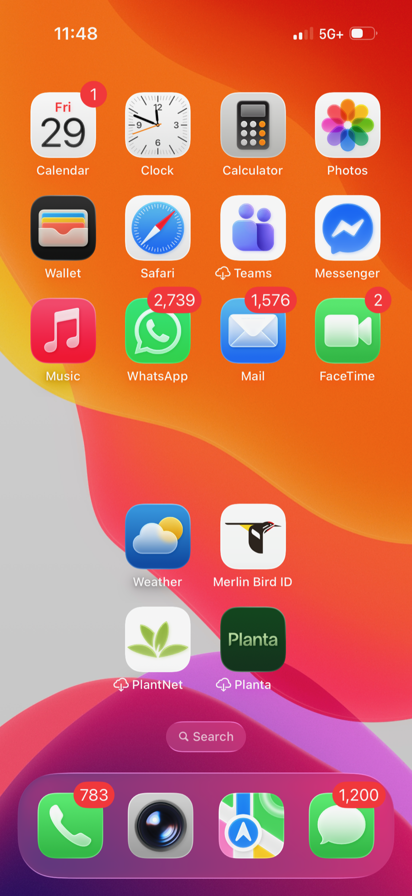

Find critical items
Identify messages that may involve deadlines, logistics, safety, money, work obligations, appointments, travel, bills, relationship repair, or unanswered direct questions.
Build notes
A practical implementation plan for an agent that reviews approved communication sources, identifies what may be critical, recommends next actions, and creates human-reviewed drafts without sending texts.
Project premise
"I have a lot of unread messages. I need to design an agent and workflow to make sure I am not missing anything critical."
The build turns that premise into a governed agent workflow: inspect approved sources, classify risk, explain why something matters, and prepare reviewable drafts or task recommendations.

Build goals
Identify messages that may involve deadlines, logistics, safety, money, work obligations, appointments, travel, bills, relationship repair, or unanswered direct questions.
Filter out obvious automated traffic, marketing messages, verification codes, low-priority alerts, stale threads, and items that do not require human action.
Recommend wait, reply, nudge, no further contact, or request more context. For texts, the agent creates drafts only; the human reviews, edits, and sends manually.
Operating boundary
System design
Connect only approved sources: local Messages database, manually supplied screenshots, Gmail if requested, calendar if requested, and user-provided relationship context. Each source gets a clear read/draft/send permission label.
Remove short codes, verification messages, marketing blasts, obvious bots, duplicate notifications, stale non-actionable threads, and threads where the latest visible context already resolves the issue.
Classify remaining items by urgency and type: low urgency, practical urgency, emotional sensitivity, repair needed, stop-contact, missing context, VIP thread, or possible critical item.
Apply rules for response timing, prior follow-ups, deadlines, tone, unresolved asks, and VIP status. The agent should explain the recommendation in one to three grounded reasons.
Return a review package with recommendation, why, suggested timing, draft option, alternate draft if useful, risk note, and human-review-required flag.
Execution flow
Collect recent approved messages and metadata: sender, timestamp, direction, unread status, attachments present, and thread recency.
Rank by criticality signals, VIP status, deadlines, unanswered direct asks, and practical dependency.
Read enough thread context to avoid false positives and avoid making recommendations from metadata alone.
Create concise draft options only when a reply or nudge is appropriate. Otherwise recommend wait or no action.
Send a summary back to the human with suggested actions and local file references. No text messages are sent to anyone else.
Decision model
Wait
If fewer than 24 hours have passed since the last outbound text and there is no practical deadline, recommend waiting.
Light nudge
If 24 to 48 hours have passed, the person is usually responsive, and the thread is not emotionally escalated, prepare one low-pressure draft.
Urgent draft
If plans, timing, money, health, work, travel, or safety depend on a reply, prepare a direct logistical draft regardless of elapsed time.
Careful repair
If the thread involves conflict, vulnerability, apology, anxiety, rejection, or repair, prioritize calm accountable language and avoid demanding reassurance.
Stop contact
If two follow-ups have gone unanswered or the other person set a boundary, recommend no further message unless there is concrete safety or logistics context.
Need context
If important facts are missing, ask for the minimum missing detail instead of guessing motives or over-reading the thread.
Build artifacts
Implementation backlog
Run on demand for the last 7, 30, or 60 days. Produce a local Markdown report of follow-up candidates, nudge candidates, critical items, and no-action threads.
Add a human-maintained VIP list with stricter alerting thresholds, lower tolerance for missed direct asks, and higher priority in the daily summary.
Check a small number of priority sources during heartbeat windows and only notify the human when something is urgent or has waited too long.
Create a local review queue of suggested replies with status fields: pending review, edited, sent by human, skipped, waiting, or closed.
Log what was reviewed, why an item was flagged, what draft was created, and what the human decided. Keep sensitive content minimized.
Add email and calendar checks only after the text workflow behaves well, with source-specific privacy and permission boundaries.
Quality checks
The agent should not flood the human with low-value nudges. A small, credible list beats a long anxious one.
The agent should catch obvious practical urgency: plans, appointments, bills, work asks, travel, safety, or direct unanswered questions.
Drafts should sound human, short, grounded, and non-pressuring. Emotional threads need extra caution.
Private thread content should stay local to the workflow and should not be used for web search or external sharing.
The final action must always belong to the human for texts. The output is a recommendation and draft, not an autonomous send.
The agent should not become a social-pressure machine. "Do nothing" is a valid and often correct recommendation.
{kind=link}